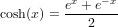
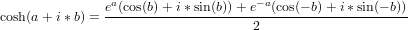
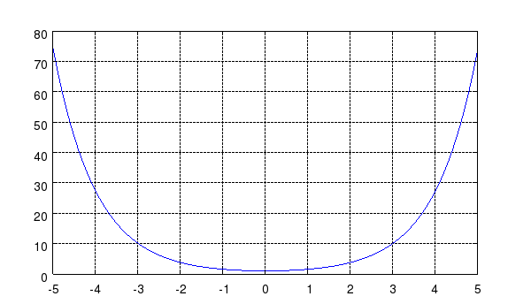

COSH Hyperbolic Cosine Function
Section: Mathematical Functions
Usage
Computes the hyperbolic cosine of the argument.
The syntax for its use is
y = cosh(x)
Function Internals
The cosh function is computed from the formula

For x complex, it follows that

Examples
Here is a simple plot of the hyperbolic cosine function
--> x = linspace(-5,5);
--> plot(x,cosh(x)); grid('on');
